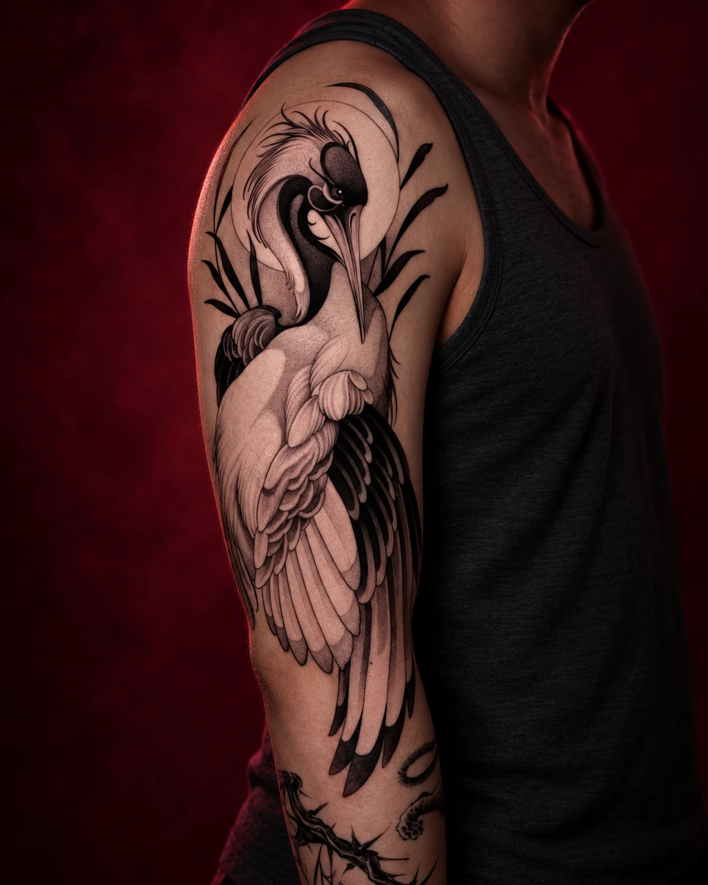
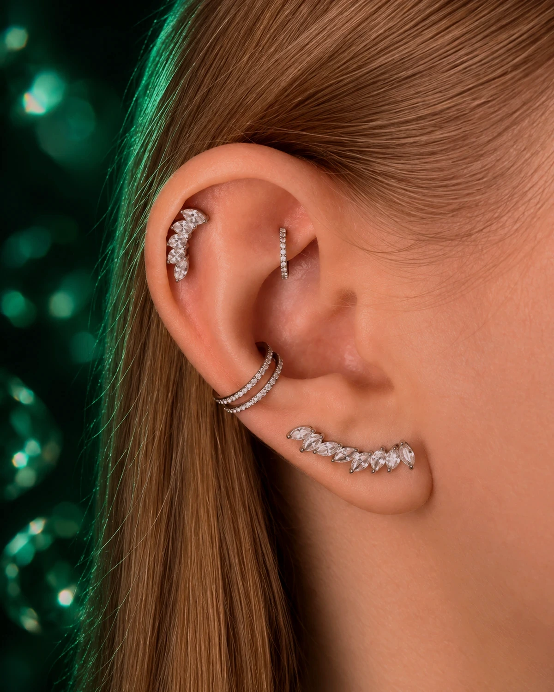
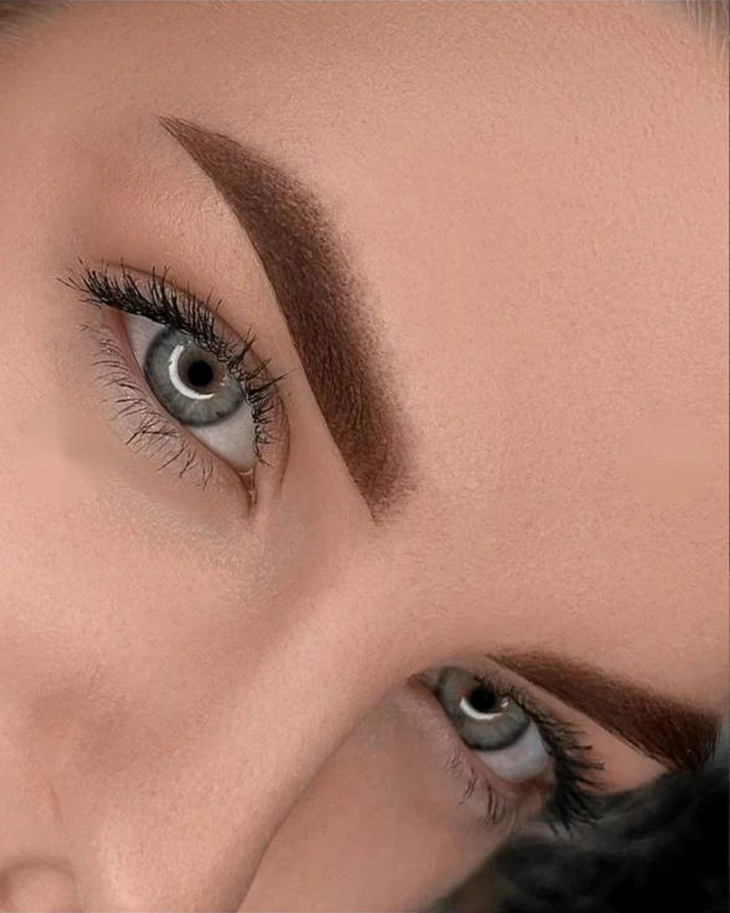
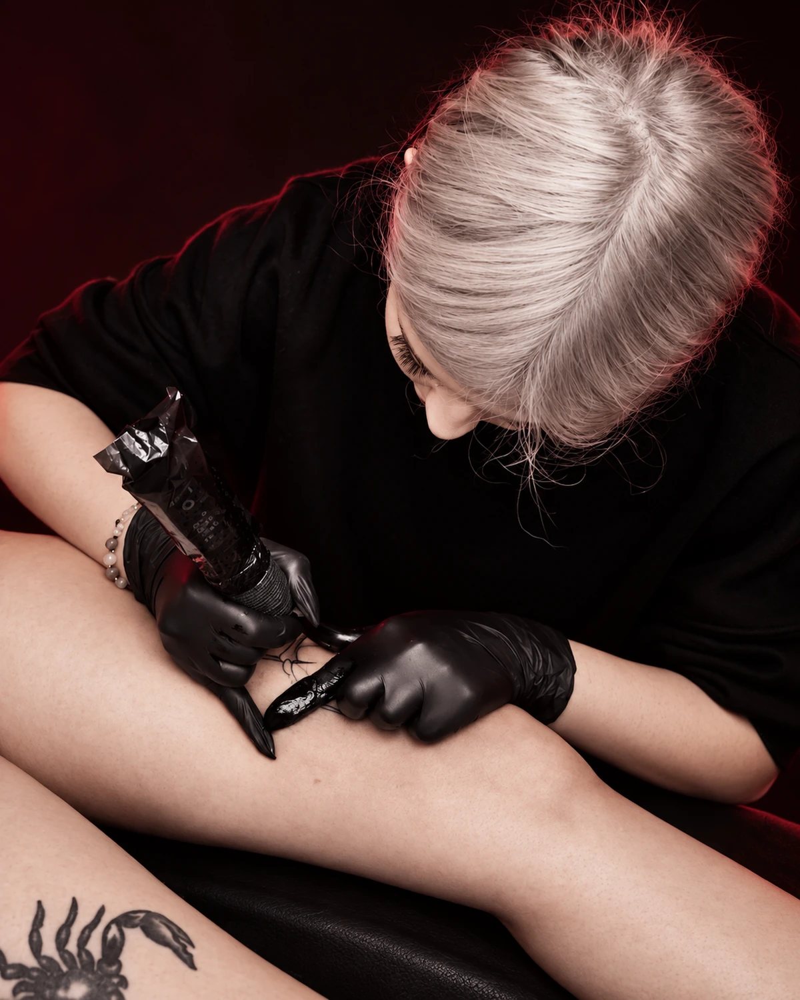

ТАТУ
От минимализма
до больших проектов

От минимализма
до больших проектов

Проколы, замена
и подбор украшений

Брови, губы
и межресничка

Курсы тату-мастера
и пирсера
Запись, подготовка
и стоимость — по делу.
Позвони или напиши Дарье во ВКонтакте либо Telegram. Укажи услугу и удобные даты. Студия работает ежедневно с 12:00 до 22:00 по предварительной записи.
Пришли размер, место на теле и референсы. Дарья уточнит детали и рассчитает стоимость до записи.
Да. Можно прислать рисунок, несколько референсов или просто описать настроение. Мастер поможет собрать идею в цельный эскиз.
Выспись, поешь перед визитом и не употребляй алкоголь. После процедуры мастер объяснит уход и поможет подобрать украшение.
Да: курс тату-мастера и курс пирсинга. Программа, даты и формат обучения согласуются лично со студией.